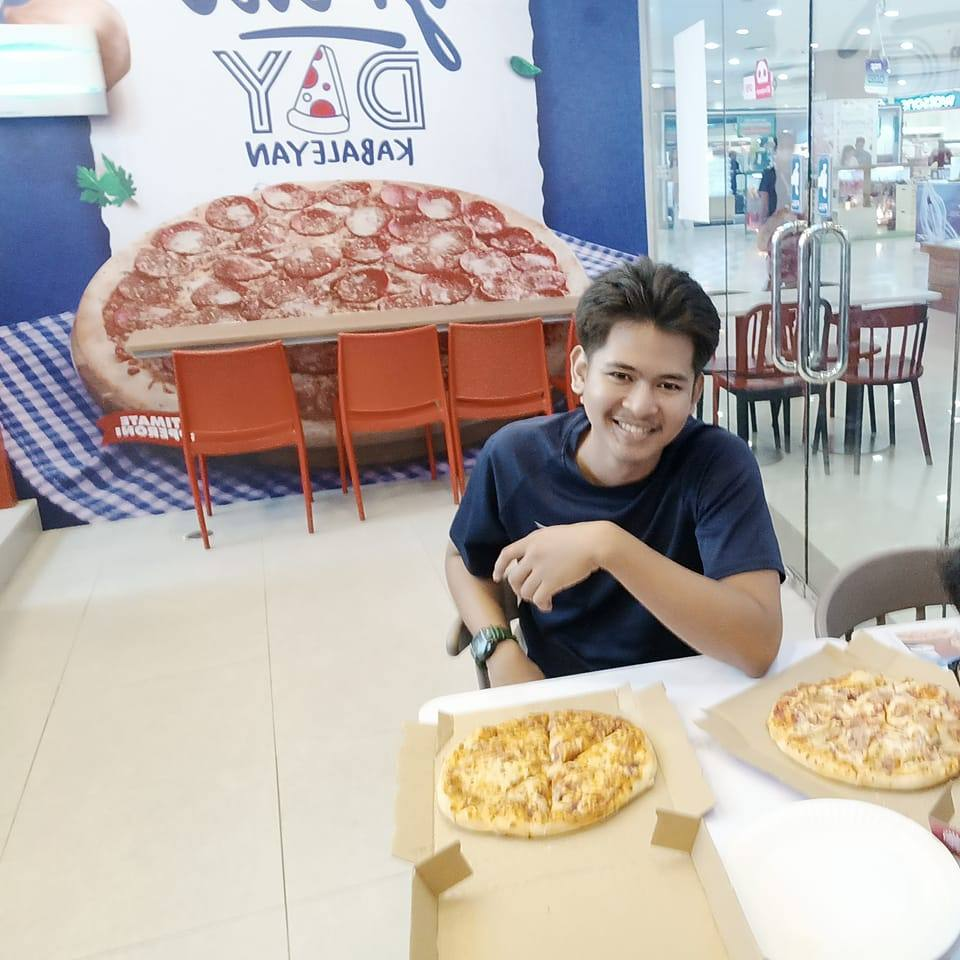
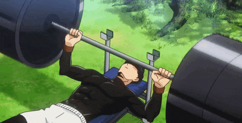

Information
About Me
Hello! I'm a 3rd-year Computer Science student with a deep passion for web development, coding, and crafting interactive digital experiences. I thrive on solving complex problems and love the continuous journey of learning in the ever-evolving world of technology. From building responsive websites to exploring new tools and frameworks, I enjoy turning creative ideas into functional, user-friendly applications. My goal is to grow as a developer and make meaningful contributions through tech.
Skills

I have a solid foundation in front-end technologies including HTML and CSS, which I use to design and develop clean, responsive, and user-friendly interfaces. I'm confident working with modern layout techniques such as Flexbox and CSS Grid, and I enjoy using animations and transitions to create engaging UI experiences.
Hobbies
To stay balanced, I make time for physical fitness, particularly weightlifting, which helps me maintain focus, discipline, and a healthy mindset. I find that the consistency and goal-setting involved in fitness directly translate to my approach in tech — always striving to improve, stay motivated, and push beyond limits.
Education
Virgen Milagrosa University Foundation (VMUF) As a dedicated student at VMUF, I am pursuing my degree in Computer Science with a strong academic performance, maintaining an average of 87%. My coursework has provided me with a solid foundation in both theoretical and practical aspects of computing, including software development, web technologies, and problem-solving skills. I am committed to continuous learning and excellence in both academic and personal growth.